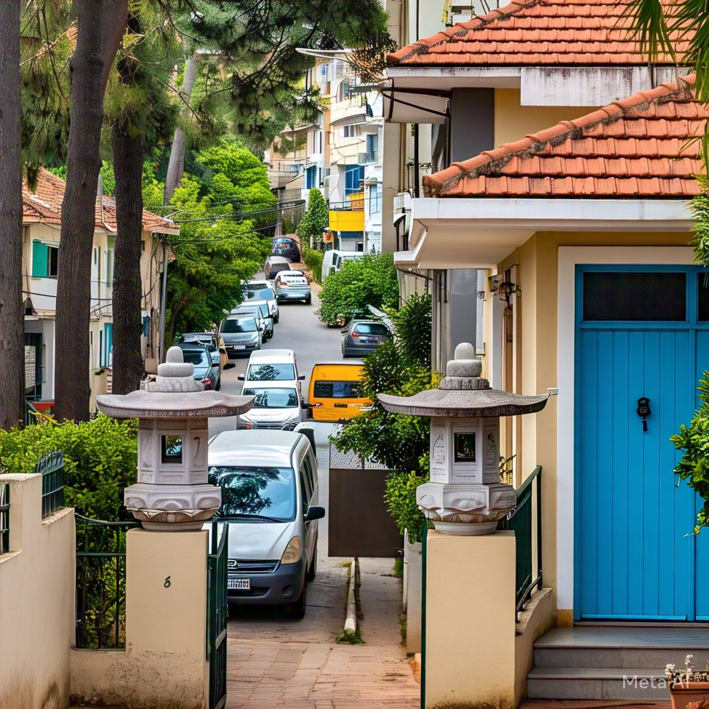
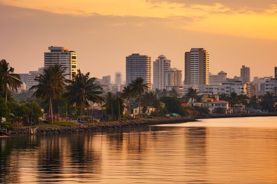

Africa's real estate sector is rapidly evolving, and savvy investors are turning their attention to the continent's emerging markerts. With growing populations, urbanization, and infrastructure development, the opportunities are eenormous. Here are the top 5 investment hotspots for Property in Africa in 2025:
1. Lagos, Nigeria.
Lagos is a top investment hotspot in Africa for 2025, driven by its booming economy, rapid urbanization, and growing demand in housing. Lagos remains Nigeria's commercial hub & one of the most dynamic cities in West Africa. The city's population is expected to surpass 20 million by 2025, creating a huge demand for housing, especially in emerging neighbourhoods like Ibeju-Lekki, Lekki, Victoria Island just to mention a few.
The Economy of Lagos is projected to hit $355 billion by 2025, making it an attractive destination for investors seeking returns. Ongoing Infrastructure development projects, such as the Lagos Smart City Initiative and the Lekki-Epe International Airport, are enhancing property values and drawing more foreign interest.
Lekki is a luxury and business hub with high-end neighbourhoods and commercial spaces, driven by projects like the Lekki Free Trade Zone and Dangote Refinery. Ibeju-Lekki is an emerging area with affordable land and massive industrial growth, making it a future powerhouse for residential and commercial ventures. Victoria Island remains a top real estate spot for high-net-worth individuals, with luxury developments and a vibrant lifestyle.
Investing in Lagos offers several benefits, including high rental yields, property value appreciation, and a growing middle class that creates demand for mid range properties. With its dynamic economy, growing population, and limited housing supply, Lagos provides a wealth of oppurtunities for real estate investors in 2025.
2. Cairo, Egypt.

Cairo's real estate market is a dynamic and growing sector, driven by the city's increasing population and economic development. As the Capital of Egypt, Cairo offers a unique blend of historical significance, cultural richness and modern amenities, making it an attractive destination for property investors.
The city's real estate market is characterized by mix of old and new developments, ranging from historic buildings to modern apartments and vilas. The demand for housing is high, particularly in areas with good infracture, transportation links, and social amenities.
Cairo's real estate market offers a range of opportunities for investors, from affordable apartments to luxury Villas. The city's neighbourhoods, such as Zamalek, Maadi, and Heliopolis, are popular among expats and local alike, offering a mix of modern amenities and historic charm.
Overall, Cairo's real estate market is poised for continued growth, driven by the city's increasing population, economic development, and government initiatives. With its rich history, vibrant cultures, and modern amenities, Cairo offers a unique and attractive opportunity for property investors.
3. Cape Town, South-Africa.
Capetown Town, South Africa, has solidified its position as one of Africa's top real estate hotspots, ranking third in the continent's most sought after destinations. This stunning city, nestled between the majestic mountains and the Atlantic Ocean, offers a unique blend of natural beauty economic stability and lifestyle appeal that makes it an attrcactive destination for property investors and homebuyers alike.
The city's economic stability is a major draw, with a strong and diverse economy driven by key sectors such as finance, technology, and tourism. This Stability makes it an attractive destination for businessess and professionals, supporting a thriving propertymarket. The city's breath taking landscapes, from Table Mountain to its precise beaches, offer a unique quality of life that is hard to find elsewhere.
Cape tTown's lifestyle appeal is another significant factor in its popularity. This city offers a desirable lifestyle that balances urban sophistication with outdoor adventure. From world-class dining and entertainment to hiking and surrfing, the city caters to a range of intrests and preferences.
As the city continues to grow and develop, its position as one of Africa's top real estate hotspots is likely to strengthn, offering opportunities for those looking to invest in property.
Each of these cities has unique advantages, from infrastructure growth and economic stability to lifestyle and tourism appeal. Whether you're looking for short term goals or long term portfolio, Africa is the place to watch in Real Estate.